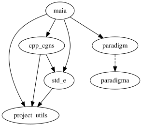

Development workflow¶
Sub-modules¶
It is often practical to develop Maia with some of its dependencies, namely:
project_utilsstd_ecpp_cgnsparadigmpytest_parallel
For that, we rely on Git submodules. Maia submodules are located at $MAIA_FOLDER/external. If you have already successfully built Maia, the submodules have been populated (probably with git submodule update --init).
If you need to modify one of the submodule library, e.g. std_e, go to $MAIA_FOLDER/external/std_e where you can use Git on a local repository of std_e. For more details on how submodules work, we advise this tutorial.
The graph dependency of Maia with respect to its submodules is the following:
{kind=link}

In order for submodules to work as you would expect when developping within several dependencies at the same time, we advise you to source this script, and then use:
cd $MAIA_FOLDER
git_config_submodules
It will ensure that commits in one submodule (e.g. std_e) is acknowledged by all the depending sub-modules (e.g. cpp_cgns), not only by Maia.
Launch tests¶
Tests can be launched by calling CTest, but during the development, we often want to parameterize how to run tests (which ones, number of processes, verbosity level…).
There is a source.sh generated in the build/ folder. It can be sourced in order to get the correct environment to launch the tests (notably, it updates LD_LIBRARY_PATH and PYTHONPATH to point to build artifacts).
Tests can be called with e.g.:
cd $PROJECT_BUILD_DIR
source source.sh
mpirun -np 4 external/std_e/std_e_unit_tests
./external/cpp_cgns/cpp_cgns_unit_tests
mpirun -np 4 test/maia_doctest_unit_tests
mpirun -np 4 pytest $PROJECT_SRC_DIR/maia